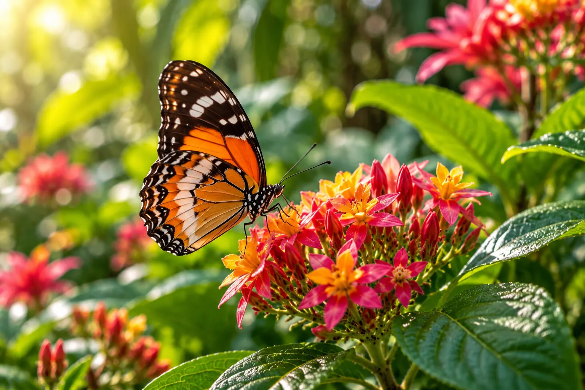
GALLERY
Moments Made By Nature
Explore butterflies in flight, tropical blooms, peaceful pathways and the little moments that make every visit to Wing & Bloom feel extraordinary.
Explore The Gallery
01
COLOUR • MOVEMENT • WONDER
THROUGH OUR LENS
A Garden Full Of Beautiful Moments
No two visits look exactly the same. A butterfly may settle beside you, sunlight may fall differently across the garden, or a new flower may suddenly begin to bloom.
Every photograph captures
a moment that happened naturally.
EXPLORE THE COLLECTION
Find Your Favourite View
Wander through our collection of butterflies, tropical flowers, conservatory spaces and quiet garden moments.
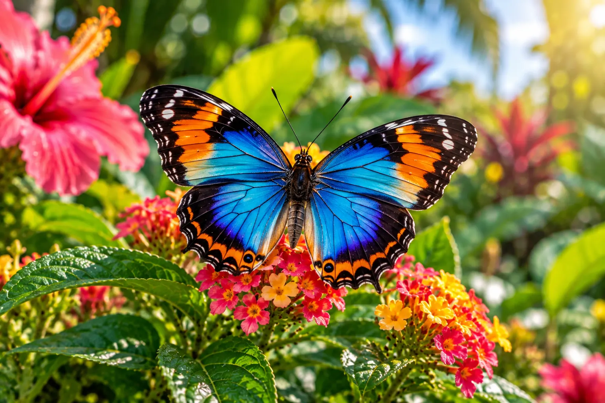
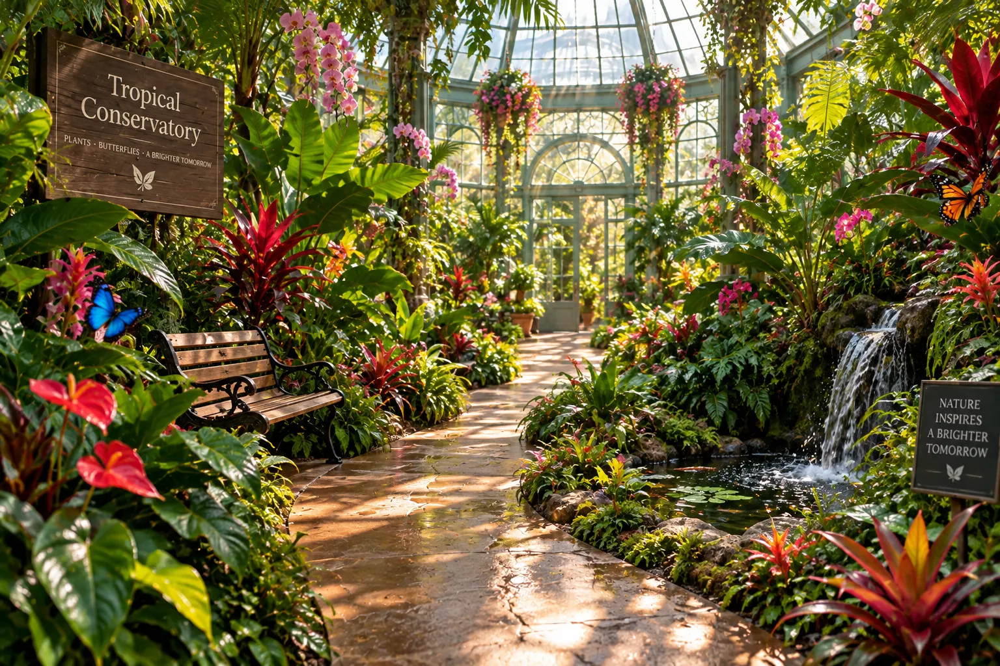
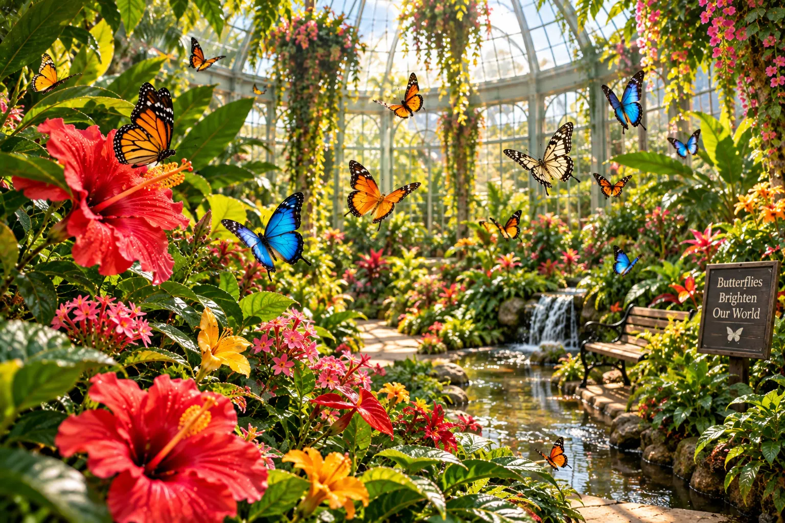
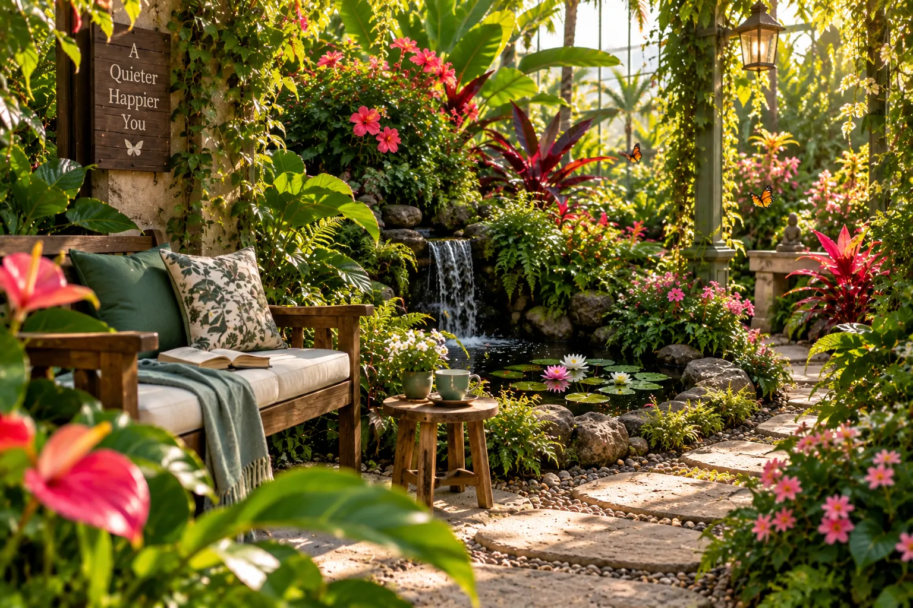
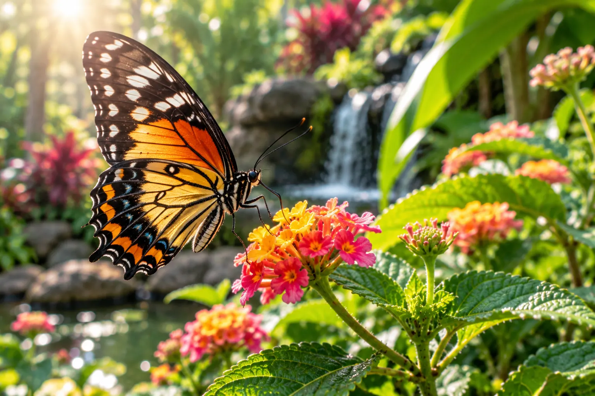
CAPTURE
01
FEATURED MOMENT
Sometimes Wonder Stays Still
A butterfly pauses for only a moment before taking flight again. These quiet encounters are part of what makes every walk through the conservatory different.
BEST TIME TO PHOTOGRAPH
Bright, peaceful mornings
OUR LITTLE TIP
Move slowly and let nature come to you
THROUGH THE SEASONS
The Garden Is Always Changing
New flowers, changing light and different butterfly activity give every season its own character.

01
Spring
Fresh blooms & bright wings
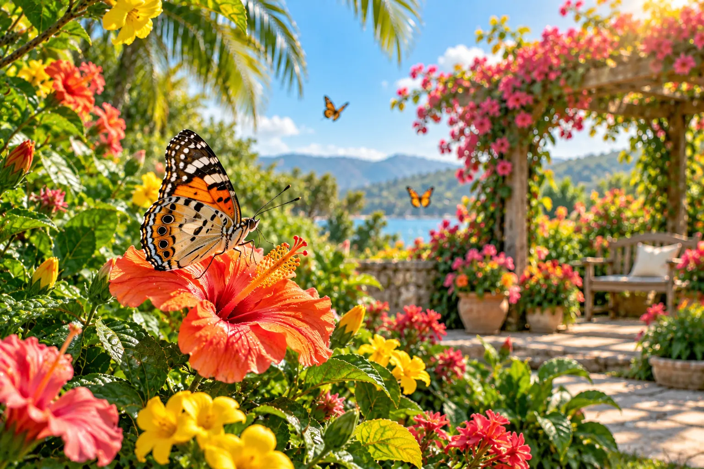
02
Summer
Warm light & tropical colour
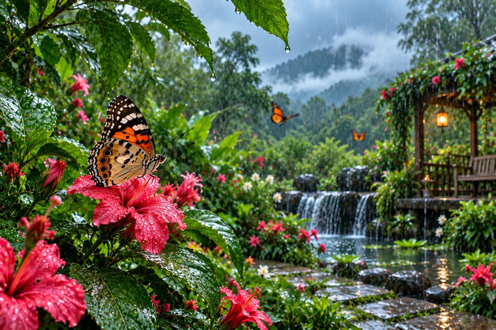
03
Monsoon
Deep greens & fresh growth
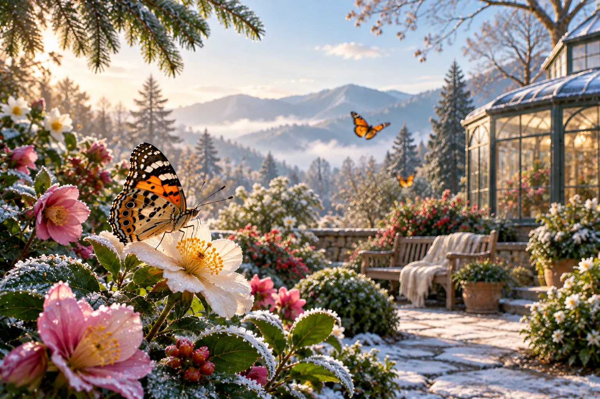
04
Winter
Soft light & quiet beauty
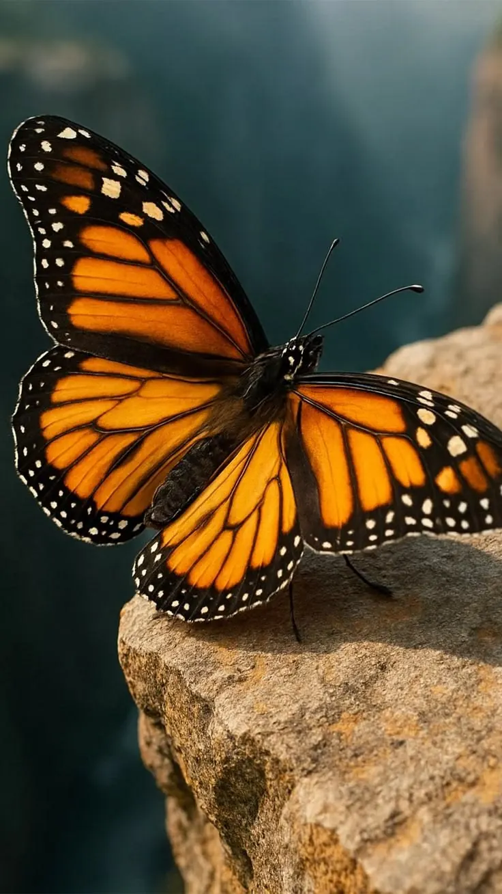

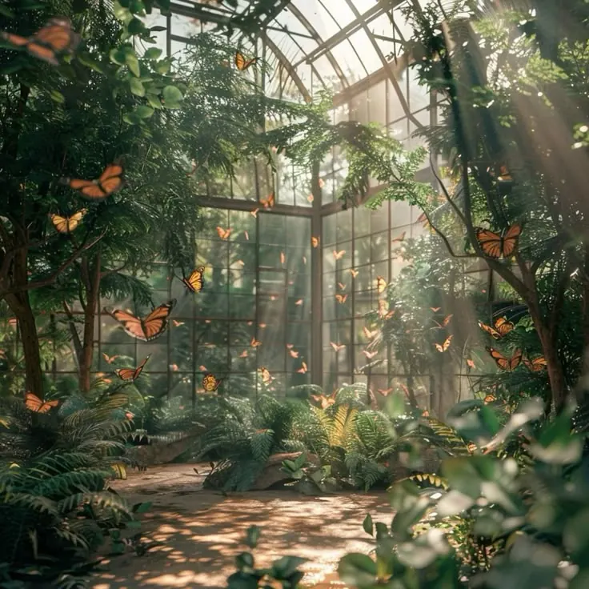
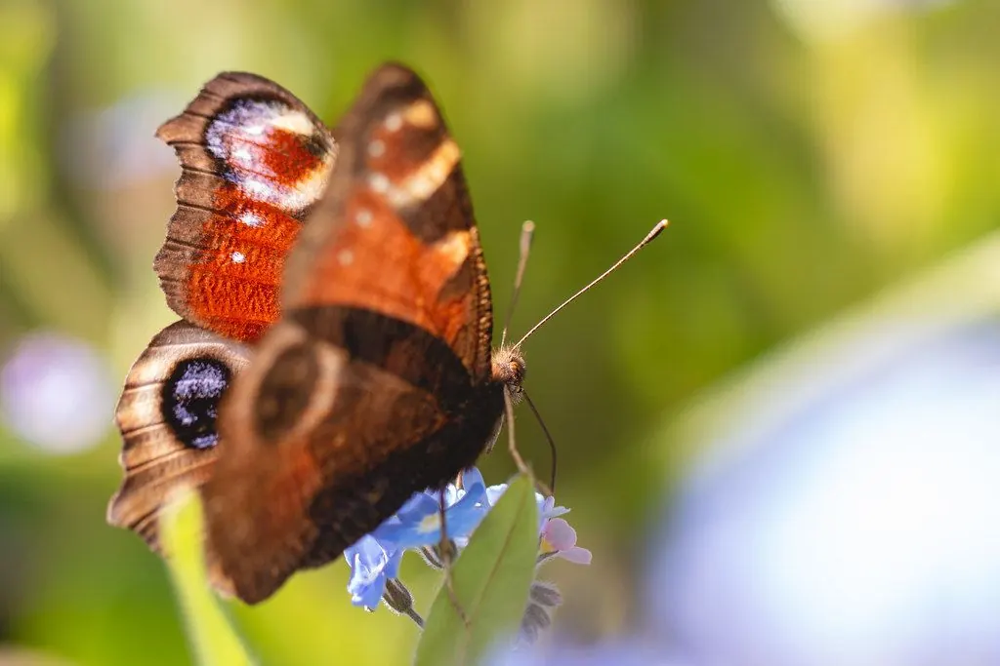
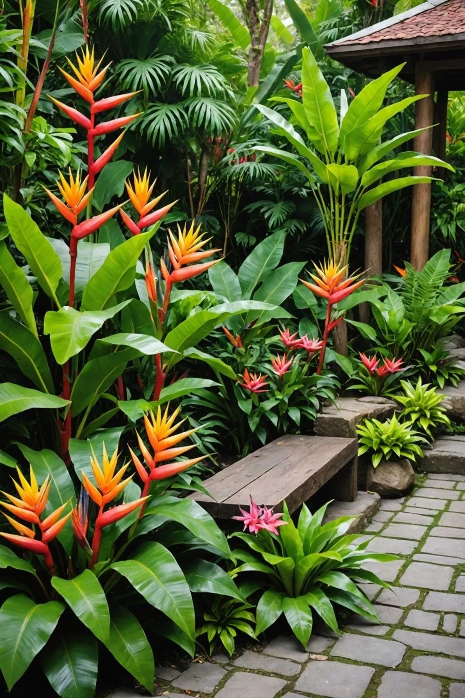
PAUSE • LOOK CLOSER • WONDER
CREATE YOUR OWN MOMENTS
Your Next Garden Memory Starts Here
Step into a world of butterflies, tropical blooms and peaceful garden moments waiting to be captured.